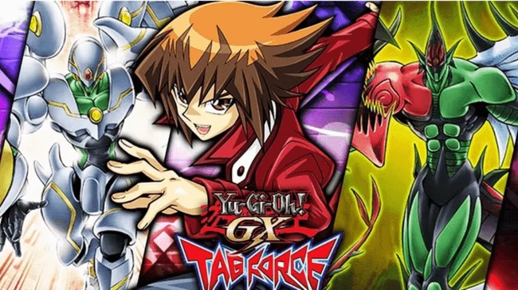
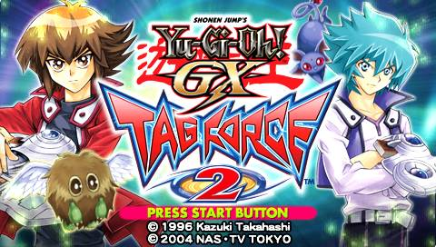
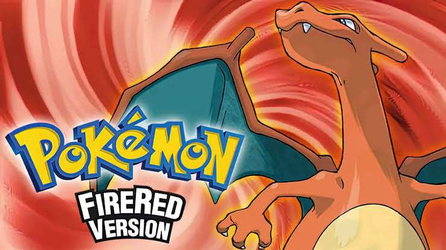
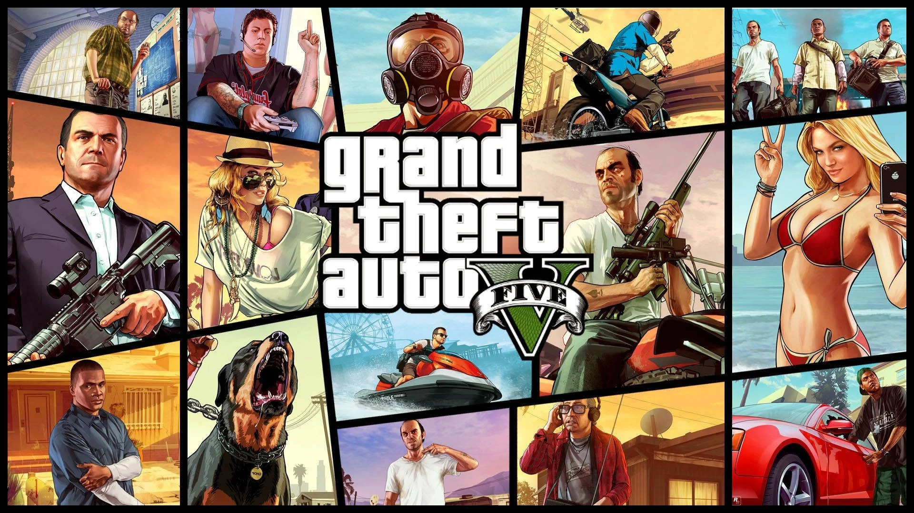

Yu-Gi-Oh! GX Tag Force - Nota 8/10
Já havia zerado noutra vez com o Zaine mas nessa preferi usar o Jaiden e foi uma sofrencia já que o personagem tem 2 de qi, a salvação desse jogo é ter o obelisco Nova q é um duelista pifio mas que dá dinheiro p krl, ai fica facil voce farmar para fazer um deck com suas preferencias, optei por fazer um deck de ritual em volta do Demise que chegou a ficar muito forte e fez os ultimos duelos serem faceis demais. O jogo termina no duelo contra Kagemaru na forma de veio e jovem que foi os 2 duelos mais faceis que tive no jogo inteiro, talvaz tenham sido por vir cartas ruins para a cpu e deu no que deu.
Ler mais

Yu-Gi-Oh! GX: Tag Force 2 - Nota 6/10
Agora eu me lembro do por que não ter zerado e sim apenas jogado um pouco quando era menor, o jogo parece muito sem vida comparado ao 1, além de ser muito enjoativo, os personagens parecem maquinas e algumas vezes a IA do jogo é muito burra (a do Jaiden principalmente). Parece que tiveram preguiça de fazer esse segundo jogo, as duplas de tag pelo visto são randomizadas por isso não estranhe voce ver o egocentrico Crowler junto de um aluno sliffer com um deck pifio de insetos.
Ler mais

Pokemon Fire Red - 7/10
Primeiro jogo de Pokémon que termino, o jogo em sua maioria não traz desafio com exceção da liga no final, as cavernas e lagos são um saco de passar se você não tiver repelente, tem mais variações de pokémons do que eu me lembrava e capturar os pokémons lendários são uma porra de difícil (não é uma reclamação já que lendário na minha visão tem que ser algo quase impossível de conseguir msm fds), único que não consegui pegar foi o Articuno.
Ler mais

GTA V - 8/10
Tive a oportunidade de re-jogar recentemente, cheguei até a entender melhor os personagens já que a primeira vez que eu joguei eu pulava as cut scenes e não lia os dialogos direito, re-jogando aproveitei mais os "eventos" do jogo também como o psiquicologo do Michael que você decide ir ou não durante o jogo, as sessões com eles foram bem interessantes apesar de parecer muito mais que ele estava se aproveitando do Michael por ter bastante dinheiro fazendo as sessões serem mais caras por varios motivos ao decorrer do jogo. Mas a verdade é que os três protagonistas são uns cuzões, todos culpam sempre alguém por serem de tal maneira, são todos hipócritas exceto o Trevor que é "só" um psicopata, entre os 3 o protagonista que eu mais gosto é o Michael, que critica o capitalismo mas mora numa fudendo mansão com uma quadra de tênis que ele nem usa e etc... Pelo menos ele admite que é hipócrita e chega até a falar que a hipocrisia é uma das "virtudes" do ser humano, o que me deixou meio incomodado no jogo é o Franklin ser muito "sem sal".
Ler mais